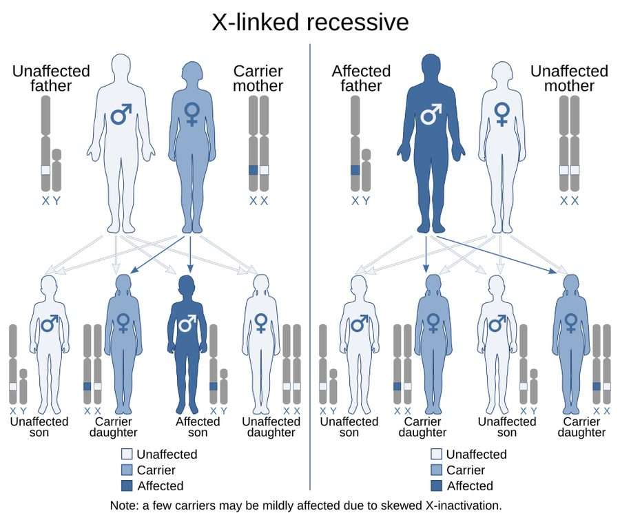

General information only. It does not replace advice from a health professional or genetic counselling.
At a glance
| Gene | DMD (dystrophin), X chromosome: the largest human gene |
| Inheritance | X-linked recessive; a third are new cases |
| Frequency | About 1 in 3,500-5,000 male births |
| Onset | Between 2 and 5 years |
| Treatment | Steroids, multidisciplinary care, therapies targeted at specific mutations |


What it is
Duchenne muscular dystrophy is an inherited disease in which muscles degenerate progressively and are replaced by fat and scar tissue. It is named after the French neurologist Guillaume Duchenne, who described it in detail in the 1860s.
It affects almost exclusively boys. The first signs appear between ages 2 and 5:
- Late walking, frequent falls, difficulty running, jumping or climbing stairs.
- Gowers' sign: to get up from the floor, the child "climbs" up his own legs with his hands.
- Enlarged calves (pseudohypertrophy), as muscle is replaced by fat and fibrous tissue.
- Waddling, tiptoe walking.
Without treatment, most boys lose the ability to walk by around 10-12 years. Then come scoliosis, weakness of the breathing muscles and heart involvement (cardiomyopathy). About a third have learning or developmental difficulties.
Thanks to current care, life expectancy has risen from the teenage years to the fourth decade of life, and many young men study, work and live independently with support.
Genetic cause
It is caused by variants in the DMD gene on the X chromosome, which makes dystrophin. This protein works like a shock absorber: it links the internal skeleton of the muscle fibre to its membrane and protects it from wear during contraction. Without dystrophin, each contraction damages the fibre, which eventually dies.
DMD is the largest gene in the human genome: it spans about 2.2 million bases, almost 0.1 % of the whole genome. Its size explains why it is often altered. In about 65-70 % of cases one or more exons are missing (deletions), in 10 % fragments are duplicated and the rest are small variants.
Duchenne and Becker
What determines severity is not so much how much DNA is missing as whether the gene's reading frame is broken:
- If the deletion shifts the frame, no dystrophin is made: Duchenne.
- If the frame is kept, a shorter but partly functional dystrophin is made: Becker muscular dystrophy, milder and later in onset.
This "reading-frame rule" is the basis of some current treatments.
Inheritance
It is X-linked recessive. Boys have a single X, so one altered copy is enough to cause the disease. Carrier women are usually healthy, although about 10 % have mild weakness and, above all, a risk of heart involvement, so regular cardiac check-ups are advised.
A carrier mother has, in each pregnancy, a 50 % chance of an affected son (if male) or a carrier daughter. About a third of cases are due to a new variant. There is also germline mosaicism: the mother is not a carrier in her blood but is in some of her eggs, with a recurrence risk of about 4-8 %. So genetic counselling is offered even when the mother's test is normal.
Diagnosis
- CK (creatine kinase) in blood: very high, 10 to 100 times normal, from birth. A high CK in a late-walking child, or even raised liver enzymes without liver disease, should suggest a dystrophy.
- Genetic testing of DMD: first deletions and duplications are sought (with a technique called MLPA) and, if none are found, the gene is sequenced. Identifying the exact variant is essential to know whether the child is eligible for targeted therapies.
- Muscle biopsy is reserved for unclear cases.
- Carrier testing for the mother and other women in the family.
Treatment
Standard care
- Corticosteroids (prednisone, deflazacort or the newer vamorolone): delay loss of walking by about 2-3 years, protect respiratory function and reduce scoliosis. They are started before strength begins to decline.
- Daily physiotherapy, night splints and stretching to prevent contractures.
- Cardiology: check-ups from diagnosis and heart-protective drugs (ACE inhibitors or angiotensin receptor blockers) from age 10 or earlier.
- Respiratory: lung function monitoring, cough assistance and night-time non-invasive ventilation when needed.
- Management of scoliosis, bone health, nutrition, and psychological and school support.
Targeted therapies
- Exon skipping: antisense oligonucleotides that make the cell's machinery "skip" a particular exon when reading the gene, restoring the reading frame and producing a Becker-like dystrophin. Each drug works only for deletions affecting one specific exon (for example 51 or 53). Some have accelerated approval in the US; in Europe they have not been authorised for lack of evidence of clinical benefit.
- Ataluren, for the 10-13 % of cases with variants that introduce a premature stop signal. It had conditional approval in Europe, which was withdrawn in 2024-2025 when its efficacy was not confirmed.
- Givinostat, an oral drug that reduces inflammation and fibrosis, approved in the US in 2024 and in Europe in 2025 for boys who can still walk.
- Gene therapy: since the full gene does not fit in the viruses used as carriers, a shortened micro-dystrophin is used. One (delandistrogene moxeparvovec) was approved in the US in 2023, but its efficacy is debated, and in 2025 cases of severe liver injury, including deaths, led to restrictions on its use. It is not approved in Europe.
It is a fast-moving field with a great deal of hope, but it is wise to seek information from specialist units and reliable sources.
Where to learn more
See also: Haemophilia, Inheritance patterns and Gene therapy.
Sources
- Duan D, Goemans N, Takeda S, Mercuri E, Aartsma-Rus A. Duchenne muscular dystrophy. Nat Rev Dis Primers. 2021;7(1):13. doi:10.1038/s41572-021-00248-3
- Birnkrant DJ, Bushby K, Bann CM, et al. Diagnosis and management of Duchenne muscular dystrophy, part 1. Lancet Neurol. 2018;17(3):251-267. doi:10.1016/S1474-4422(18)30024-3
- Mercuri E, Vilchez JJ, Boespflug-Tanguy O, et al. Safety and efficacy of givinostat in boys with Duchenne muscular dystrophy (EPIDYS). Lancet Neurol. 2024;23(4):393-403. doi:10.1016/S1474-4422(24)00036-X
- Koenig M, Hoffman EP, Bertelson CJ, et al. Complete cloning of the Duchenne muscular dystrophy (DMD) cDNA. Cell. 1987;50(3):509-517. doi:10.1016/0092-8674(87)90504-6
- European Medicines Agency. Duvyzat (givinostat) and Translarna (ataluren).
- MedlinePlus Genetics. Duchenne and Becker muscular dystrophy.